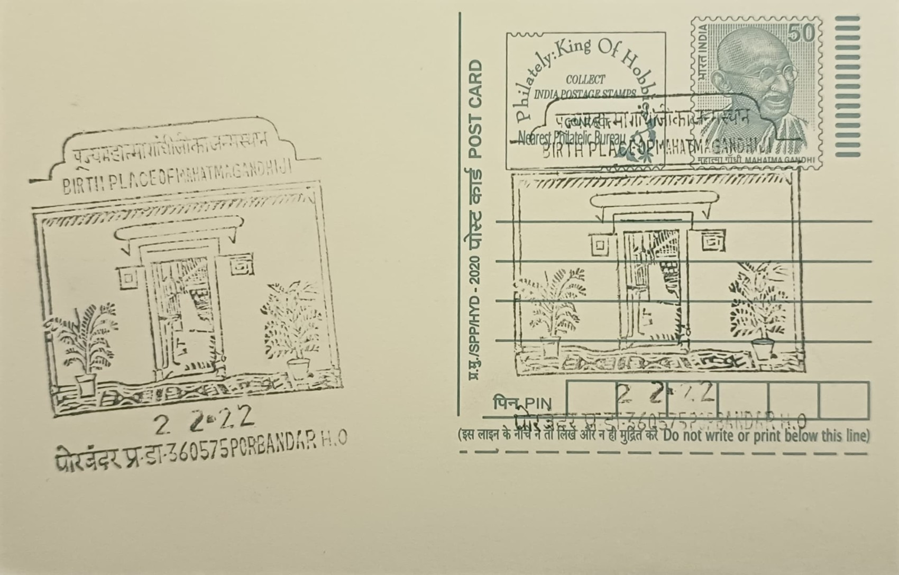

Kirti Mandir-The Birth Place of Mahatma Gandhi
કીર્તિ મંદિર - મહાત્મા ગાંધીનું જન્મસ્થળ


Kirti Mandir takes its name, meaning "Temple of Fame" or "Memorial of Glory," from its purpose as a monument raised not to a deity but to a historical figure: Mohandas Karamchand Gandhi, born on 2 October 1869 in the ancestral haveli his great-grandfather, Harjivan Raidas Gandhi, had purchased roughly two centuries earlier. The family had long served as diwans, or chief ministers, to the princely states of Porbandar and neighbouring Rajkot and Junagadh, and the haveli they occupied in the old town's narrow lanes remained a private residence until it was transformed, decades after Gandhi's birth there, into a public memorial bearing his commemorative name.
As the site of the Mahatma's birth, Kirti Mandir occupies a central place among the network of Gandhi memorials across India, ranking alongside Sabarmati Ashram and Raj Ghat as a principal pilgrimage point for his followers and for students of the independence movement. Its significance is as much national as religious: the complex is recognised by the Gandhi Heritage Portal and the Gujarat state tourism department as a protected heritage site, and it draws visitors specifically for the historical and symbolic weight of the exact room in which Gandhi was born, rather than for any object of worship in the conventional temple sense.
The memorial was designed by the architect Purushottambhai Mistry with funds donated by the industrialist and philanthropist Nanjibhai Kalidas Mehta, who had persuaded Gandhi to let his family's house be transferred to a trust for preservation. Its foundation stone was laid by the freedom fighter Darbar Gopaldas Desai in 1947, and construction took about two years, culminating in a dedication by Sardar Vallabhbhai Patel on 27 May 1950, after Gandhi's assassination. The finished structure is E-shaped, blending domes, terraces, and balconies in a style drawing on Hindu, Jain, Buddhist, Parsi, church, and mosque motifs meant to reflect Gandhi's regard for all faiths, and it is crowned by a central sikhara standing 79 feet tall, a height chosen deliberately to mark the 79 years of Gandhi's life.
The most understated element of the memorial is also its most significant: the original room of the old haveli where Gandhi was born has been left largely unadorned, marked on the floor only by a small marble swastika inlay rather than any elaborate shrine, preserving the modesty of the family home even as the grander temple structure rose around it. Adjoining the main building stands the house where Kasturba Gandhi was born, incorporated into the same commemorative precinct, so that the complex memorializes both spouses on grounds that once belonged to two separate but neighbouring merchant families of Porbandar.
The memorial today functions as a small museum and reference library, holding photographs, personal artefacts, life-size portraits of Gandhi and Kasturba, and a collection of books by and about Gandhi that scholars and visiting students consult alongside tourists. Administered under a dedicated trust framework established at Mehta's initiative and now linked to the Gandhi Smriti and Darshan Samiti's national network of memorial sites, Kirti Mandir is maintained as a publicly accessible monument rather than a working shrine, open year-round to pilgrims, researchers, and the steady stream of visitors who come to Porbandar specifically to see the house where the Mahatma's life began.
| Date of Introduction | April 18, 1992 |
|---|---|
| Address | Senior Postmaster, |
| Porbandar HO, | |
| Porbandar (dt.), Gujarat - 360575. |